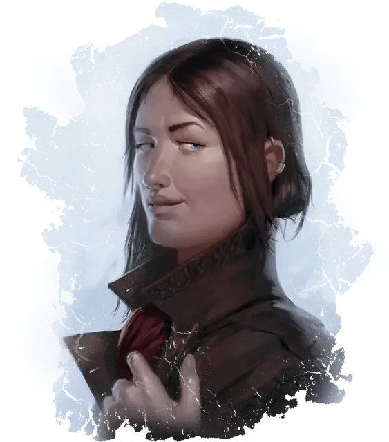

Девятипалая Кин
Nine-Fingers Keene
Средний Гуманоид (Человек), нейтральный, именной НИП

Класс Доспеха 15 (кожаный доспех)
Хиты 84 (13к8 + 26)
Скорость 30 футов
| мод | спас | ||
|---|---|---|---|
| СИЛ | 12 | +1 | +1 |
| ЛОВ | 18 | +4 | +7 |
| ТЕЛ | 14 | +2 | +2 |
| мод | спас | ||
|---|---|---|---|
| ИНТ | 13 | +1 | +4 |
| МДР | 17 | +3 | +3 |
| ХАР | 14 | +2 | +2 |
Навыки Акробатика +10, Восприятие +6, Запугивание +5, Ловкость рук +10, Обман +5, Проницательность +6, Скрытность +10
Чувства пассивное Восприятие 16
Языки Общий, Воровской жаргон
Опасность 5 (1800 опыта)
Бонус мастерства +3
Особенности
Хитрое действие. Кин может в каждом своём ходу бонусным действием совершать Засаду, Отход или Рывок.
Метатель кинжалов. Кин добавляет удвоенный бонус мастерства к урону, который наносит дальнобойными атаками кинжалом (уже учтено в атаках).
Действия
Мультиатака. Кин совершает три атаки кинжалом.
Кинжал. . Рукопашная или Дальнобойная атака оружием: +7 к попаданию, досягаемость 5 футов или дистанция 20 / 60 футов, одна цель. Попадание: 6 (1к4+4) колющего урона плюс 6 колющего урона, если атака дальнобойная.
Реакции
Невероятное уклонение. Кин уменьшает вдвое урон от попавшей по неё атаки. Кин должна видеть нападавшего.
Описание
Нынешняя глава Гильдии, Девятипалая Кин, презирает модные шмотки и магию иллюзий. Она предстаёт перед миром такой, какая есть: скромной на вид женщиной средних лет и среднего сложения. Её неприметный вид не раз пригодился при воровстве: жертвы с трудом могли опознать её, даже снова встретившись лицом к лицу. За годы руководства Кин завоевала репутацию вдумчивого прагматика. Когда нужно, она мстит за проступки против Гильдии — если ей это выгодно. При необходимости она прибегает к жестокости, и боятся её не меньше, чем уважают.
Кин всё больше раздражает волна народного сопротивления её организации. Бывало и раньше, что отдельные нахалы мешали преступным делам, но появление организованных дружин и народных мстителей мешает деятельности Гильдии. Когда тщательно спланированное нападение на поместье патриара сорвал народный мститель, ненароком предупредивший охрану, Кин объявила сезон охоты на добряков всех мастей.